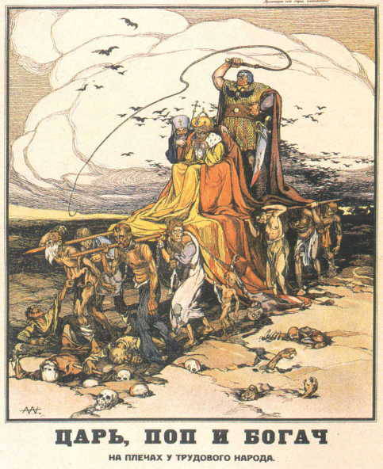
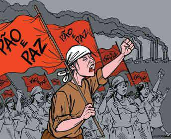

1) A Rússia adentrou o século XX com um grande atraso no seu desenvolvimento econômico, político e social, se comparada a muitos países da Europa ocidental. Mantendo-se como país agrário de base feudal, só na metade do século XIX começou a se industrializar. A transição do sistema feudal para o capitalista na Rússia reforçou os laços de servidão, em vez de incorporar o trabalho livre e assalariado. A economia era baseada na produção rural e 90% da população não sabia ler nem escrever. A abolição da servidão em 1861 não aliviou a tensão no campo, uma vez que o problema da distribuição da terra para a população mais pobre não foi resolvido. Ao mesmo tempo, ocasionou um significativo êxodo rural, que contribuiu significativamente para o processo de industrialização russa do final do século XIX.
Grande parte da população russa vivia em estado de miséria, se alimentando mal e tendo que trabalhar diversas horas para conseguir pagar os altos impostos que eram usados para sustentar uma minoria de nobres, que viviam luxuosamente nos palácios ao lado do todo poderoso da nação, o czar Nicolau II. Por outro lado, a construção da Ferrovia Transiberiana e as mudanças econômicas atraíram o capital estrangeiro e estimularam uma rápida industrialização nas regiões de Moscou, São Petersburgo, Baku, bem como na Ucrânia, suscitando a formação de um operariado urbano e o crescimento da classe média. Nesse processo de modernização, a miséria dos camponeses e operários se proliferou pela Rússia. O proletariado russo era violentamente explorado, mas já possuía uma forte consciência social e política e estava concentrado nos grandes centros urbanos — o que facilitaria sua mobilização em caso de revolução. Apesar da industrialização, a burguesia russa ainda era muito fraca e por isso não conseguia se opor à aristocracia e ao autoritarismo do czar.
a) Cite, a partir do texto, as diversas classes sociais em convívio na Rússia czarista.
b) Qual a situação de contraste pode ser observada na realidade russa do início do século XX?
c) Quais ideias ou palavras podem ser associadas a “atraso” e “modernização”?
d) Retire um trecho do texto acima que se relacione à ilustração abaixo, na qual o czar é carregado por trabalhadores russos.

2) Em 1904, a Rússia declarou guerra ao Japão, disputando o controle da Manchúria, uma área banhada pelo Oceano Pacífico. Desse combate, o Japão saiu como vencedor e a Rússia, em grave crise socioeconômica. Essa crise prejudicou o já miserável povo russo, evidenciando as debilidades do czarismo e colaborou para unir operários, camponeses, burguesia, classe média e soldados na luta contra o autoritarismo e a crise. Dessa forma, em 1905, explodiram inúmeras revoltas, organizadas por comitês formados pela aliança entre as diversas camadas sociais insatisfeitas com o governo de Nicolau II, como os liberais, setores da burguesia e do proletariado. Entre as revoltas estavam o levante dos marinheiros do Encouraçado Potemkim e outra representativa do autoritarismo do regime, em que milhares de pessoas realizaram uma pacífica passeata pela cidade, com o objetivo de entregar uma carta ao czar informando sobre as dificuldades enfrentadas pelo povo. Cantando hinos cristãos e desejando saúde ao czar, o destino final da passeata foi o Palácio do Inverno, em São Petersburgo. Sem nem ao menos querer saber o motivo da passeata, Nicolau II mandou que sua guarda pessoal abrisse fogo sobre a multidão, fato que levou à morte centenas de pessoas.
a) Como ficou conhecido esse último episódio narrado da história russa?
b) Qual era a situação da Rússia nestes anos que antecederam a Revolução de 1917?
3) Mesmo abatida pelos reflexos da derrota militar frente ao Japão, a Rússia envolveu-se em um outro grande conflito, a Primeira Guerra Mundial (1914-1918), em que também sofreu pesadas derrotas nos combates contra os alemães. Para a Rússia, a guerra trouxe consequências sérias: milhões de soldados mobilizados e mortos, a indústria voltou-se para produção bélica, crescimento das rebeliões populares e das greves operárias, inflação desenfreada, redução da produção agrícola, gerando fome e revoltas de soldados que combatiam nas frentes de batalha. As derrotas na guerra somadas a um governo opressor, corrupto e incapaz de resolver os amplos problemas na Rússia tornaram insustentável a situação do Czar. Isolado com a nobreza, os movimentos de oposição de multiplicaram: no parlamento, tanto com parte da aristocracia, quanto com a burguesia, já nas ruas o povo se manifestava. Em pouco tempo, ideias revolucionárias e antimonárquicas ganharam corpo em meio aos trabalhadores. Diversos grupos formavam oposição planejando derrubar o governo e promover a renovação do país por meio de orientações políticas de caráter socialista e anarquista. A Rússia estava a um passo da revolução.
a) A Primeira Guerra Mundial acelerou a Revolução Russa? Explique.
b) Comente a figura abaixo a relacionando com o texto lido.

4) O governo provisório, liderado por políticos moderados, como o advogado Kerenski, procurou diminuir a insatisfação popular libertando os presos políticos, permitindo a volta dos exilados e concedendo liberdade de imprensa e associação. Mas contrariou os anseios do povo em um ponto importante: declarou que a Rússia continuaria na guerra.
O líder bolchevique, Vladimir Lenin, que se encontrava exilado, retornou à Rússia em abril de 1917, e passou a defender a derrubada do governo provisório, a retirada da Rússia da guerra e a repartição de terras entre os camponeses. Os lemas defendidos por Lenin eram: “Todo poder aos sovietes” e “Paz, terra e pão”. Com o agravamento da situação social, provocado pela permanência da Rússia na guerra, as ideias de Lenin foram ganhando cada vez mais força entre a população.
No dia 24 de outubro de 1917, tinha inicio a Revolução: os bolcheviques, liderados por Lenin e Trotsky – comandante da Guarda Vermelha -, ocuparam os prédios públicos da cidade de São Petersburgo, inclusive o Palácio de Inverno, e assumiram o poder. O governo da Rússia passou às mãos dos bolcheviques, sob a liderança de Lenin, no cargo de presidente do Conselho de Comissários do Povo.
O governo bolchevique liderado por Lenin adotou várias medidas de grande repercussão social:
- propôs a paz aos alemães: em 3 de março de 1918, a Rússia saía da guerra, assinando com a Alemanha o Tratado de Brest-Litovsk;
-confiscou as terras da família real, dos nobres e da Igreja ortodoxa e distribuiu-se entre os camponeses;
- estatizou a economia: indústrias, bancos e estradas de ferro passaram a ser dirigidos pelo governo russo;
- estabeleceu a igualdade de direitos entre homens e mulheres.
a) Um dos lemas dos bolcheviques era “Paz, terra e pão”. O que isso significava para os revolucionários?